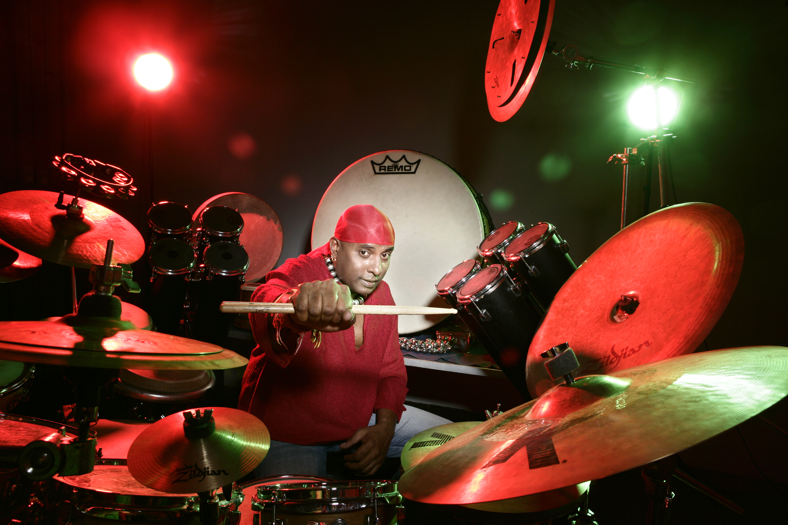

Finding the pulse
Growing up in a musical family, Sivamani began performing at a young age and developed a distinctive approach to percussion.
Anandan “Drums” Sivamani is an acclaimed Indian percussionist, drummer and composer, celebrated for his powerful live performances and imaginative approach to rhythm. From traditional percussion to sounds found in everyday life, his performances bring energy, spontaneity and musical curiosity to every stage.




Anandan Sivamani grew up in Chennai in a musical family. His father, S. M. Anandan, was a professional drummer who introduced him to music when he was young. His early exposure to instruments, recording sessions and working musicians helped shape the distinctive performer audiences know today.
As a child, Sivamani was fascinated by the rhythms around him. He began his musical journey at a young age, learning through close contact with musicians and the world of live performance. Those formative years helped develop an open-minded approach to percussion.
Over the years, he has shared stages and collaborated with celebrated musicians including A. R. Rahman, Zakir Hussain, Trilok Gurtu, M. S. Viswanathan, Ilaiyaraaja and Louis Banks. His work spans Indian film music, live concerts, fusion projects and international performances.
His film-related work includes contributions to soundtracks such as Roja, Bombay, Dil Se, Taal, Lagaan, Guru and Rockstar. His musical world also includes projects and ensembles such as Asia Electrik, Shraddha and the Zakir Hussain World Drums Ensemble.
From Indian classical rhythms to jazz, film scores and global collaborations, Sivamani’s performances are powered by spontaneity. The result is music that feels deeply rooted and alive in the moment.
His father’s encouragement and the sounds of Chennai became the first chapters of a life in rhythm.
A musical path shaped by collaboration, experimentation and a fearless approach to live performance.

Growing up in a musical family, Sivamani began performing at a young age and developed a distinctive approach to percussion.
He shared stages and projects with artists including A. R. Rahman, Zakir Hussain, Trilok Gurtu and many more.
The Government of India recognized his contribution to music with one of the country’s highest civilian honours.
The musical journey of Anandan “Drums” Sivamani reflects a lifelong curiosity about sound. From his early years in Chennai to international stages, his approach has remained rooted in experimentation, collaboration and the joy of performance.
His collaborations with A. R. Rahman and other renowned musicians brought his percussion to audiences around the world. Alongside film recordings and live concerts, he has explored fusion ensembles and projects that bring together different musical traditions.
Beyond the stage, his work as a composer and his appearances at cultural events have introduced new audiences to the expressive possibilities of percussion. Every performance is an invitation to listen differently and discover rhythm in unexpected places.
Energy, craft and celebration.
Behind every extraordinary rhythm is a story of family, inspiration, heritage and a lifelong connection to music.
The family foundation that introduced Sivamani to the world of rhythm.
A drummer in the South Indian film industry and Sivamani’s early musical inspiration.
Part of his family roots and upbringing.
A personal journey shaped by relationships and a shared connection with music.
Runa Rizvi (also known as Runa Rizvi Sivamani) is an Indian singer whose work spans classical, ghazal, Sufi and playback music. The couple also perform and collaborate together.
The next generation of the Sivamani family.
A percussionist and music programmer who has worked with A. R. Rahman’s musical team.
Sivamani has two children.
Music runs in his blood. His journey began with his father’s guidance and grew into a lifetime dedicated to rhythm.
THE SIVAMANI LEGACYPress play to listen. Audio will not start automatically.
“Rhythm is everything, everywhere.”— SIVAMANI · TED PERFORMANCE